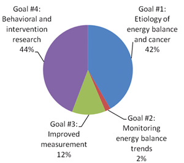
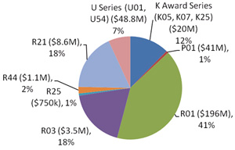
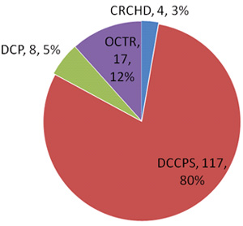
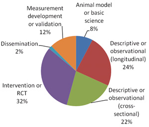
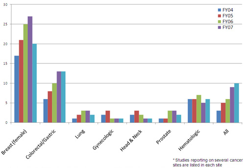
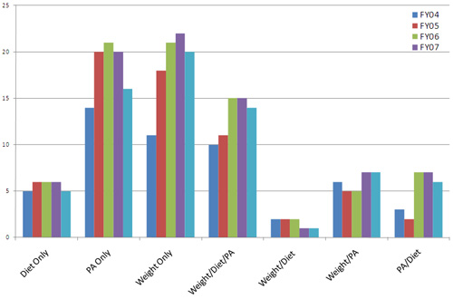
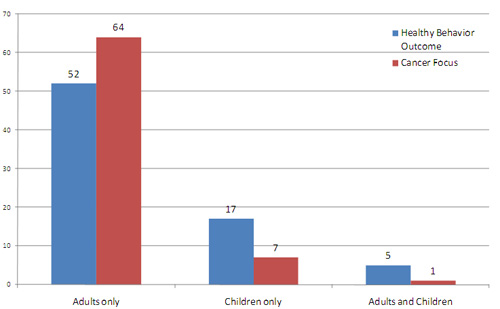

Energy Balance Research at the National Cancer Institute
Funding Portfolio (FY04-FY08)
The following graphs depict the NCI-wide portfolio of investigator-initiated grants related to energy balance. We searched the NCI grant databases to identify funded grants pertaining to energy balance from FY04 to FY08. "Energy balance" refers to the integrated effects of diet, physical activity, and genetics on growth and body weight over an individual’s lifetime. Search terms used were in many combinations and included: energy balance, physical activity, fitness, obesity, body mass index (BMI), body mass, energetics, measures/assessment, energy balance and animal models, surveillance, diet, weight gain, weight loss, weight control, behavioral interventions, policy, economics, at-risk populations, sociocultural group, genetics, insulin-like growth factors (IGF), inflammatory and stress factors, adipokines, sex hormones. Grant coding schemes were also used to identify grants and these included: nutrient sensing/metabolism, risk factor monitoring, dietary behavior change, energy balance research, diet/nutrition, dietary hormones, lifestyle, diet/dietary assessment, exercise program, lifestyle factors, obesity prevention, sedentary behavior change, nutrition, weight management, BMI, overweight/obese.
Figure 1: NCI Energy Balance Grants by 2005 Bypass Budget Goals

NCI Energy Balance Goals: In comparing the Energy Balance Goals as outlined by the 2005 Bypass Budget, 44% were categorized under behavioral and intervention research (Goal 4), 42% under etiology of energy balance and cancer (Goal 1), 12% under improved measurement (Goal 3), and 2% under monitoring energy balance trends (Goal 2) (Figure 1). Please note that to accurately assess the full extent of efforts at NCI, one would need to incorporate efforts under contracts and in-house work as much of the developmental work under Goals 2 and 3 utilize these other funding and support mechanisms.
Figure 2: NCI Energy Balance Grants by Grant Mechanism
 d
Grant Mechanism: There is a wide distribution across grant mechanisms, with 41% of the grants funded under the R01 mechanism, 18% under the R03 mechanism, and 18% under the R21 mechanism (Figure 2). When compared to the NCI distribution of funded grants under the RPG funds, the NCI portfolio has a larger percentage of R01/P01 grants and a small proportion of R21/R03 grants. The higher proportion of grants in the developmental and exploratory mechanisms in the energy balance field may reflect the current state of the science in energy balance and cancer research.
Figure 3: NCI Energy Balance Grants across NCI Divisions
 d
Division: A large proportion of the grants are within the Division of Cancer Control and Population Sciences (DCCPS) (80%), 12% in the former Office of Centers, Training, and Resources (OCTR), 5% in the Division of Cancer Prevention (DCP), and 3% in the Center to Reduce Cancer Health Disparities (CRCHD). While there are not any grants in the Division of Cancer Biology (DCB) for these fiscal years, in recent fiscal years DCB has seen a growth in energy balance grants, specifically in the areas of nutrient sensing, cancer cell energy metabolism, and molecular mechanisms of appetite regulation.
Figure 4: NCI Energy Balance Grants by Study Design
 d
Study Design: Regarding study design, approximately 32% of the studies are interventions and randomized control trials and 42% descriptive or observational studies (Figure 4). In examining descriptive or observational studies further, we found 22% were cross-sectional in design and 24% had longitudinal measures.
Figure 5: Cancer Site Examined by NCI Energy Balance Grants
 d
Trends in Cancer Site: We examined cancer site by fiscal year and for most cancers (breast, colorectal/gastric, lung, prostate, and any cancer site), we found an increase in grants in later fiscal years (Figure 5). Breast cancer as a site has the most grants funded, with colorectal/gastric as the next cancer sites with the most active grants.
Figure 6: Energy Balance Measures used in NCI Energy Balance Grants
 d
Trends in Energy Balance Measures: This figure presents measures of energy balance, that is if the grant studied diet, physical activity, weight status, or a combination of these (Figure 6). While a number of studies have examined single factors, few in the past have used a multidisciplinary approach and examined these multiple factors in the same research designs. Therefore, it was a goal of the NCI Energy Balance Working Group to increase the number of grants that studied across these measures, and the NCI portfolio shows an increase in grants that studied diet, weight status, and physical activity. Studies that measured physical activity only or weight only had the highest proportion of studies compared to all the combinations of measures.
Figure 7: NCI Energy Balance Grants by Age of Study Population
 d
Study Population: Regarding age of the population, adults, children, or both, we found most of the studies were focused on adults and very few focused on both populations.